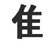

KANJIDAMAGE
Intro
Kanji facts
How to
Tags
Kanji
Radicals
Appendix
Onyomi
Ill pairs
Dupes
Articles
Long short vowlels
Synonyms
Forum
|
← Previous
Number 264
Next →

turkey
PK
I swear, that is what all the books say! This is much more complex than most radicals. On the good side, though, it is so common that you can't NOT learn it.
Used In
焦
無
維
唯
誰
準
護
雌
推
進
集
雑
稚
奮
難
雇
携
催
奪
雄
獲
馬
雅
離
 KANJIDAMAGE
KANJIDAMAGE
 Number
264
Number
264